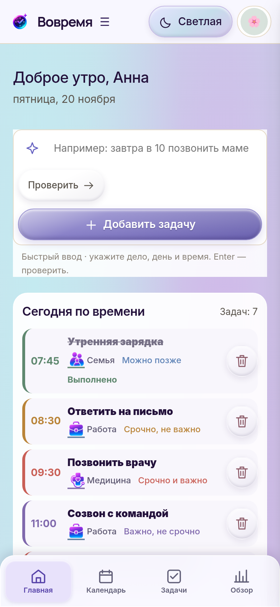
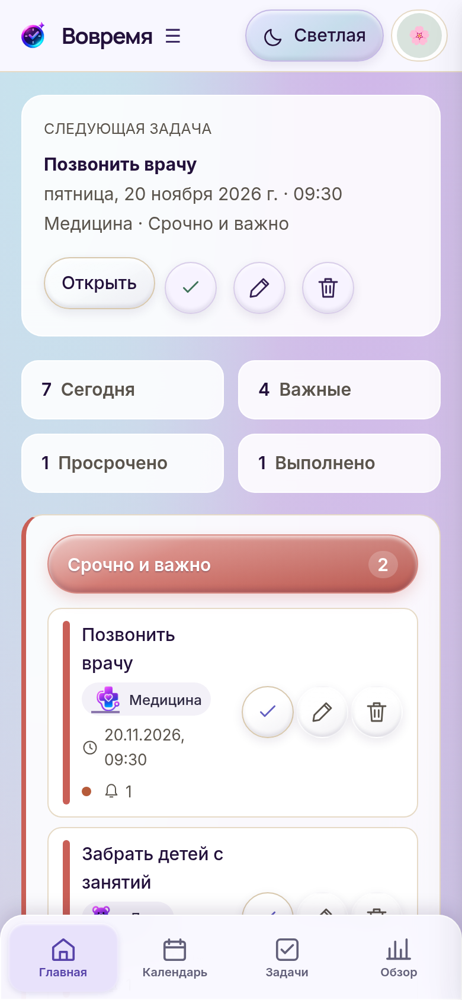
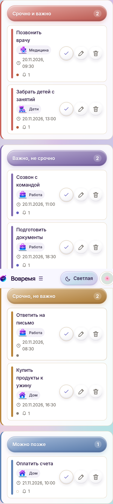
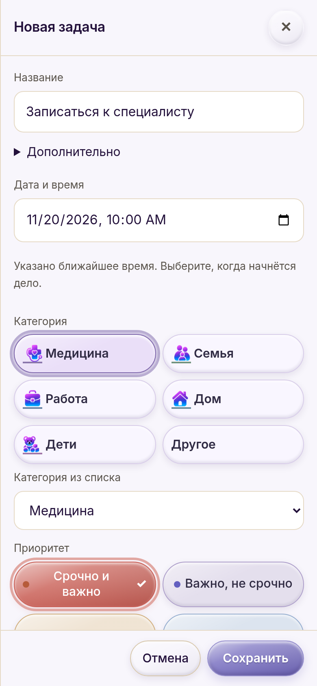
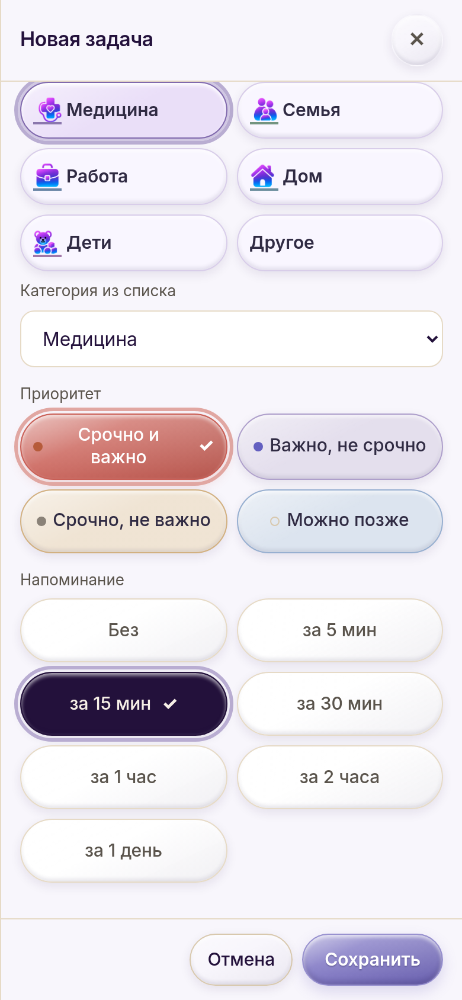
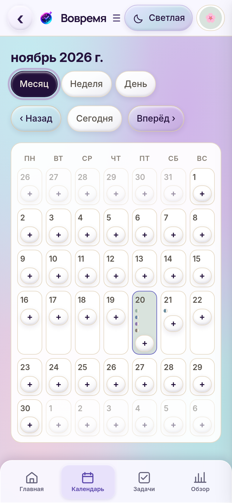
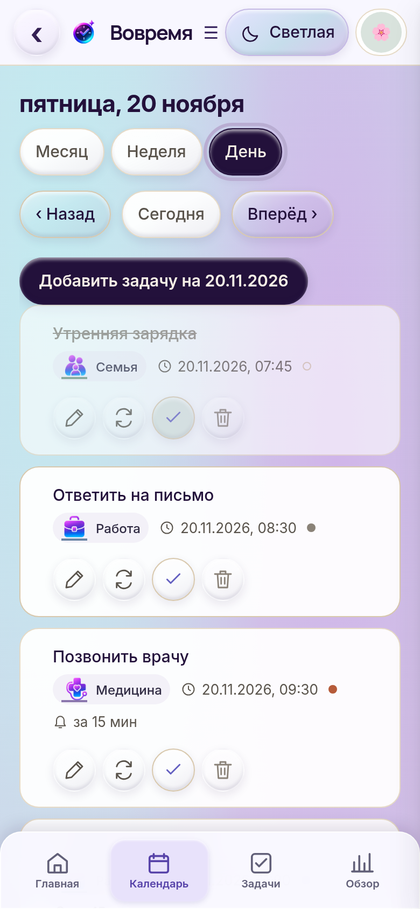
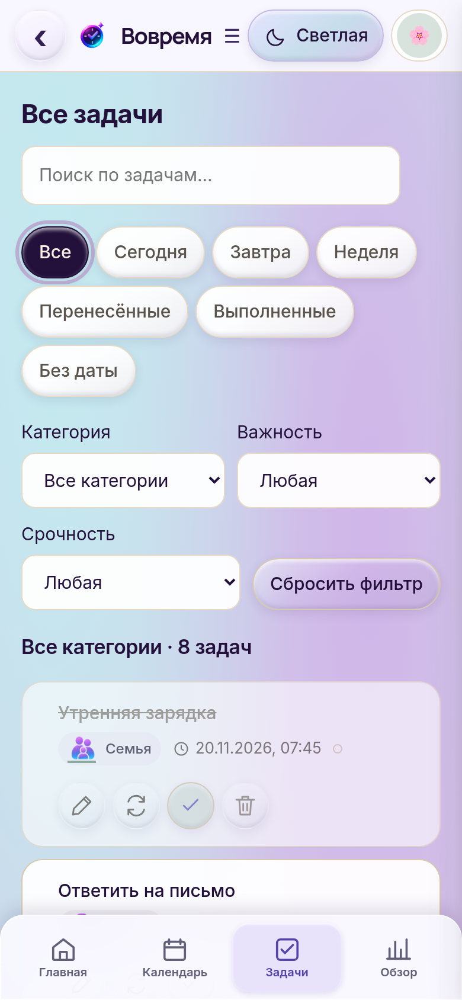
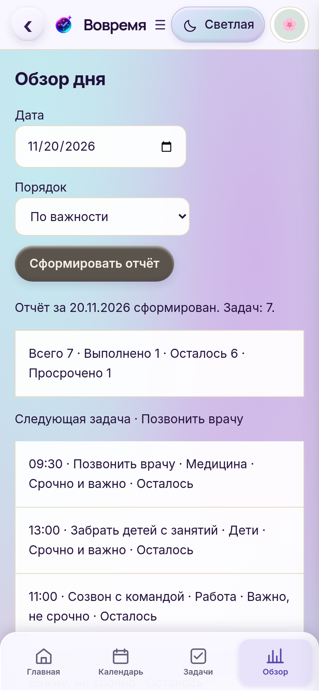
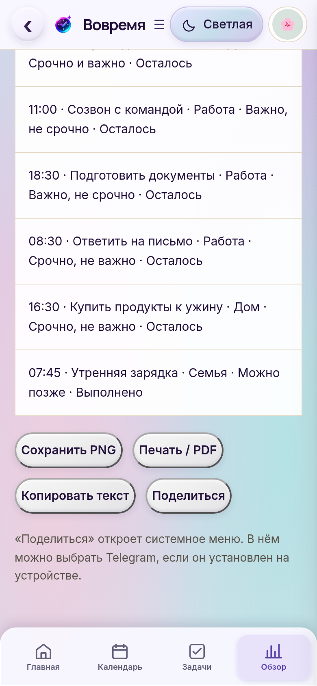

Главная · день
Приветствие, быстрый ввод и задачи по времени.
Скачать PNG ↓Реальные скриншоты мобильной версии. Имя и задачи на них вымышленные.

Приветствие, быстрый ввод и задачи по времени.
Скачать PNG ↓
Тот же план в тёмной теме приложения.
Скачать PNG ↓
Ближайшее дело, дата и показатели дня.
Скачать PNG ↓
Цветные разделы «Срочно и важно» и другие.
Скачать PNG ↓
Длинный кадр с полным набором разделов.
Скачать PNG ↓
Название, дата, время и категории.
Скачать PNG ↓
Выбор категории, приоритета и напоминания.
Скачать PNG ↓
Компактный месяц и добавление задачи на дату.
Скачать PNG ↓
Все задачи выбранного дня.
Скачать PNG ↓
Поиск и выборка по категориям, важности и срочности.
Скачать PNG ↓
Итог дня и задачи в порядке важности.
Скачать PNG ↓
PNG, печать/PDF, копирование текста и «Поделиться».
Скачать PNG ↓